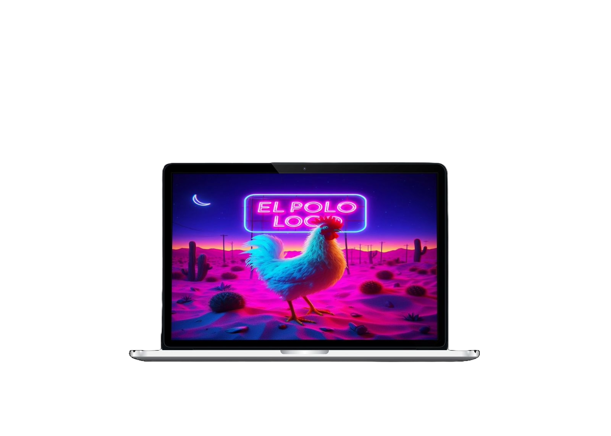

Join
Javascript | HTML | CSS
Task manager inspired by the Kanban System. Create and organize tasks using drag and drop functions, assign users and categories.

El Pollo Loco
Javascript | HTML | CSS
A simple Jump-and-Run game based on an object-oriented approach. Help Pepe to find coins and poison bottles to fight against the killer chicken.